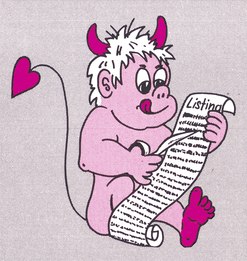

Fehlerteufelchen
Befehlstabelle 6510, Sonderheft 8/85, Seite 174 und 175
In diesem Beitrag wurden zwei Maschinenbefehle mit falschem Hexcode versehen. Der Befehl »CPX#OP« hat den Hex-Code »$E0« und der Befehl »LDX OP« »$A6«.
Entdeckungsreise durch den C 128, Ausgabe 12/85, Seite 43
In der dort beschriebenen »OLD«-Routine wurde vergessen, einen Vektor zu restaurieren. Damit die Routine fehlerfrei arbeitet, ist der »BCC«-Befehl in der Speicherstelle $0E047 abzuändern. Statt nach $0E050 muß nach $0E04B verzweigt werden.
Interface Kaufhilfe, Ausgabe 12/85, Seite 24ff
Die Preise von den dort beschriebenen Görlitz Interfaces stimmen nicht mehr. Ab jetzt kosten das:
8422 Interface (inklusive Mehrwertsteuer) 249 Mark, das 8423 Interface (inklusive Mehrwertsteuer) 284 Mark, das 8424 Interface (inklusive Mehrwertsteuer) 339 Mark.
Ein schneller »Drawline« Algorithmus, Sonderheft 8/85, Seite 167
In Bild 2 ist die Bildunterschrift falsch. Dort steht »Eine Strecke mit der Steigung 1 …«. Richtig ist aber »Eine Strecke mit der Steigung <> 1 …«.
Haushaltskasse, Sonderheft 7/85, Seite 118
Die Zeile 9950 lautet richtig:
9950 A1$ = A1$ + RIGHT$ (" {8SPACE}" + STR$(INT(B*100) + D,8)
Nicht nur ein Geheimdienst CIA, Ausgabe 2/86, Seite 93ff
Im Listing 1 ist die Zeile 160 falsch. Sie lautet richtig:
160 POKE CIA + 14, PEEK(CIA + 14) OR 128
Paint Magic und Basic-Programme, Ausgabe 2/86, Seite 81
Sollten Sie keine Bilder in eigene Basic-Programme einbinden können, ist der Befehl POKE 24565,96 durch den Befehl POKE 24565,60 zu ersetzen. Sollte das nicht zum Erfolg führen, versuchen Sie es bitte mit POKE 24565,68 oder geben statt SYS 24513 den Befehl SYS 24518 ein.
Assembler 64, Ausgabe 1/86, Seite 58ff
Im Listing 1 auf Seite 60 steht im Programmkopf ein Klammeraffe, gefolgt von einem Doppelpunkt und dem Programmnamen. Der Klammeraffe und der Doppelpunkt gehören natürlich nicht dorthin. Bei der Eingabe des Programms mit dem MSE dürfen diese beiden Zeichen folglich nicht mit eingegeben werden.